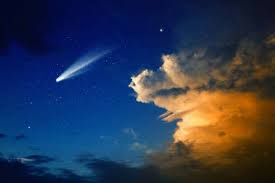
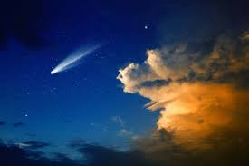
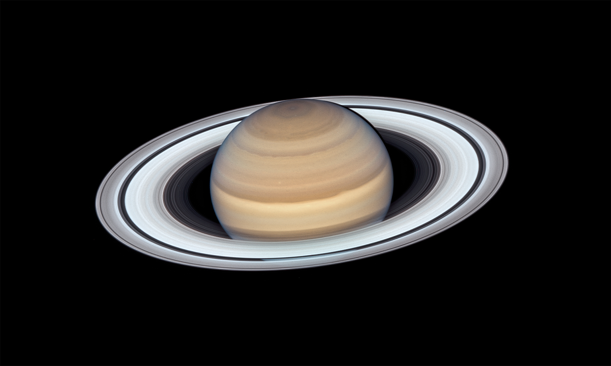
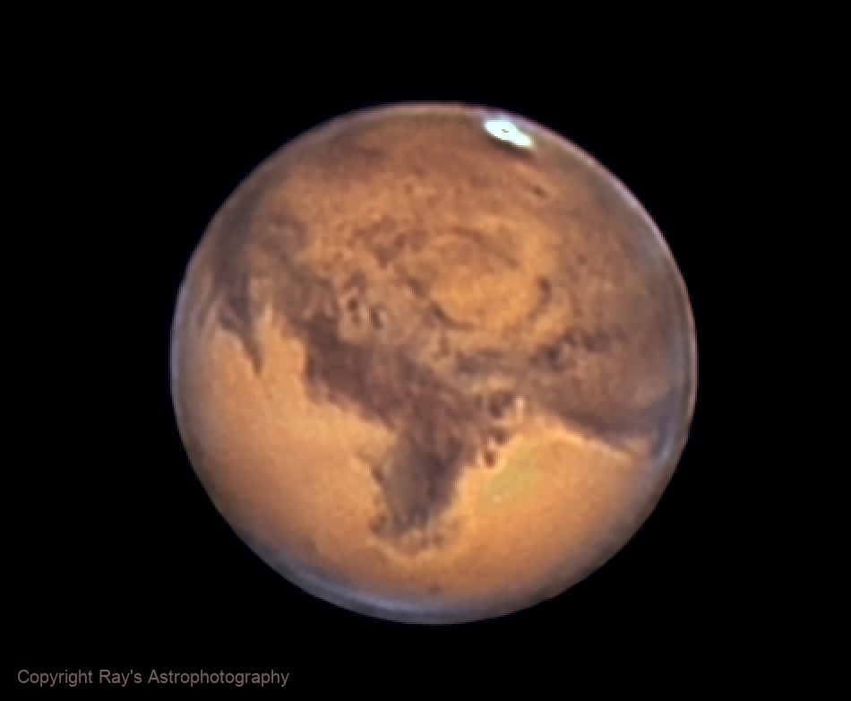

Üstökösök
Az üstökös olyan naprendszerbeli égitest,
amely a Nap körül, általában elnyújtott pályán kering,
és a Nap közelébe érve jellegzetesen fényes kómája és csóvája fejlődik.
 

Bolygók
A bolygó olyan jelentősebb tömegű égitest, amely egy csillag vagy egy
csillagmaradvány körül kering, elegendően nagy tömegű ahhoz, hogy
kialakuljon a hidrosztatikai egyensúlyt tükröző közel gömb alak,
viszont nem lehet elég nagy tömegű ahhoz, hogy belsejében meginduljon a magfúzió és ezáltal saját fénye legyen

